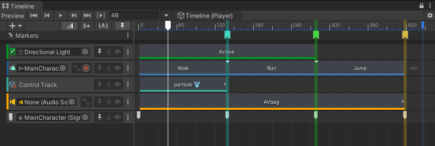
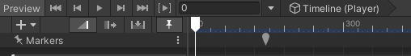
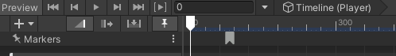
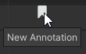
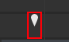
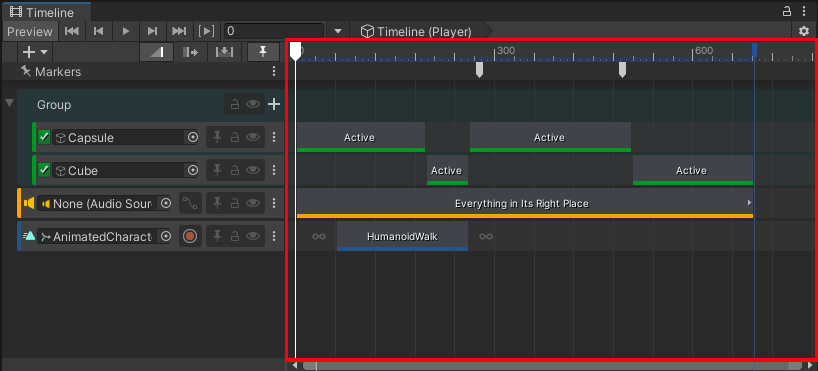

Annotation marker sample¶
The Annotation sample provides a marker that can be used as a bookmark for your timeline.

Here are the options available on an annotation:
Field |
Description |
|---|---|
Title |
The annotation’s title. This will be displayed as a tooltip, when hovering the mouse on the annotation. |
Color |
The annotation’s color in the Timeline window. |
Show line overlay |
Use this option to show a vertical line that spans the full height of the Timeline window. |
Custom marker workflow example¶
This example will demonstrate how to:
create a custom marker;
customize a marker with
MarkerEditor;use a custom USS style to draw a marker;
add additional commands with
Actions;
1. Create an annotation marker¶
A marker is an item that can be added to a Timeline Asset and is used to represent a point in time. Markers also have a specialization, just like clips (Activation clip, Audio clip, Animation clip, etc).
In order to add a new type of marker, all we need to do is to create a class that inherits the Marker class:
public class AnnotationMarker : UnityEngine.Timeline.Marker {}
This custom marker can now be added to any track or on the timeline marker area:

We can add a title, description and color to the annotation:
public class AnnotationMarker : Marker
{
public string title;
public Color color;
public string description;
public bool showLineOverlay;
}
The annotation marker itself is now complete. But the customization work is not done yet. Timeline offers many customization abilities.
2. Customize the marker’s appearance¶
A marker’s appearance can be customized using a USS style or with MarkerEditor. Both paths have their advantages and drawbacks.
Custom USS style¶
A marker can use a USS style to specify its appearance. For more information on how to create custom USS styles, see how to define custom USS styles.
The CustomStyle attribute can be used to specify a style for a given marker:
[CustomStyle("AnnotationStyle")]
public class AnnotationMarker : Marker
{
//...
}
AnnotationStyle is defined in a USS stylesheet and will be used when a marker is displayed on screen:

USS styles are useful if the desired appearance is simple (i.e. when only using a texture icon). For more complex stuff (i.e. dynamically changing a marker’s color), a MarkerEditor will be needed.
Custom editor¶
MarkerEditor can be used to augment the capabilities of a marker in the editor. It works like a custom Inspector; the CustomTimelineEditor attribute is used to tell Timeline that a MarkerEditor class should be associated to a given marker.
[CustomTimelineEditor(typeof(AnnotationMarker))]
public class AnnotationMarkerEditor : MarkerEditor
{
//...
}
Marker information¶
MarkerEditor lets us provide information about the marker by overriding the GetMarkerOptions method.
public override MarkerDrawOptions GetMarkerOptions(IMarker marker)
{
var annotation = marker as AnnotationMarker;
if (annotation != null)
{
return new MarkerDrawOptions { tooltip = annotation.title };
}
return base.GetMarkerOptions(marker);
}
Here the tooltip of an Annotation has been set to use the annotation’s title variable.

MarkerDrawOptions can also set the error text on a marker, which can be useful if a variable has been incorrectly set and needs attention.
Overlay¶
An overlay can be drawn on top of a marker by overriding the DrawOverlay method:
public override void DrawOverlay(IMarker marker, MarkerUIStates uiState, MarkerOverlayRegion region)
{
var annotation = marker as AnnotationMarker;
if (annotation != null)
{
//Draw overlay code...
}
}
An overlay is drawn on top of the marker; the USS style is drawn first and DrawOverlay is called afterwards. For an Annotation, we can use DrawOverlay to change the color of the marker and to draw a line that spans the full Timeline window’s height. To do this, we can use the information given in region. Along with the visible time range, MarkerOverlayRegion provides two rectangles that can be used to know where to draw:
markerRegion
markerRegion is the rectangle that encompasses the marker. This is useful to draw something directly on the marker itself. For Annotation, this rectangle is used to draw the color overlay.

timelineRegion
timelineRegion is the rectangle that encompasses the clips and markers region of the timeline window. This is useful to draw something out of the marker’s region, like the Annotation’s line overlay.

const float k_LineOverlayWidth = 6.0f;
float markerRegionCenter = markerRegion.xMin + (markerRegion.width - k_LineOverlayWidth) / 2.0f;
Rect lineRect = new Rect(markerRegionCenter,
timelineRegion.y,
k_LineOverlayWidth,
timelineRegion.height);
3. Create custom Actions¶
Timeline Action¶
Actions can be used to add new menu entries in Timeline’s context menus. For an Annotation, we want to add a menu item available in all context menus to create an Annotation with the clipboard’s contents. To do this, a TimelineAction is needed, along with the MenuEntry attribute.
[MenuEntry("Create Annotation from clipboard contents")]
public class CreateAnnotationFromClipboardContents : TimelineAction
{
//...
}
MenuEntry lets Timeline know that this action can be added in context menus. Classes inheriting from TimelineAction need to override two methods: Execute and Validate.
Validate¶
Validate is used to specify that the action’s prerequisites are fulfilled. In the case of CreateAnnotationFromClipboardContents, the action is only valid if there actually is contents in the clipboard. ActionValidity is used to describe the validity state of an action:
public override ActionValidity Validate(ActionContext context)
{
if (!markers.All(marker => marker is AnnotationMarker))
return ActionValidity.NotApplicable;
string buffer = EditorGUIUtility.systemCopyBuffer;
return buffer.Length == 0 ? ActionValidity.Invalid : ActionValidity.Valid;
}
ActionValidity.Valid: The action can be executed.ActionValidity.Invalid: The action cannot be executed given the current context and will appear grayed out in context menus.ActionValidity.NotApplicable: The action does not apply to the current context and will not show up in menus.
Execute¶
Execute should run the code necessary to execute the action’s purpose.
public override bool Execute(ActionContext context)
{
string buffer = EditorGUIUtility.systemCopyBuffer;
TrackAsset track = context.tracks.FirstOrDefault();
if (buffer.Length != 0)
{
// Create the new annotation and add it to the track
//...
return true;
}
return false;
}
The return value should specify if the execution succeeded or not.
Marker Action¶
It is also possible to write custom actions that apply only to markers, instead of all Timeline items. This is the purpose of the MarkerEditor class. It works just like TimelineAction, except that action applies to a list of markers.
A shortcut can also be assigned to an action. A static method with the TimelineShortcut attribute is needed. Invoker can be used to easily execute a given action:
[TimelineShortcut("Replace annotation description with clipboard", KeyCode.G)]
public static void InvokeAction()
{
Invoker.InvokeWithSelectedMarkers<ReplaceAnnotationDescriptionAction>();
}
Notes¶
Runtime considerations¶
AnnotationMarker is available at runtime; it can be queried using, for example, TrackAsset.GetMarkers(). However, AnnotationMarkerEditor and custom actions are not available at runtime, since it depends on classes that are not part of the runtime assembly.